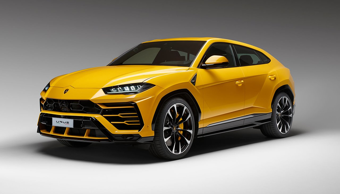
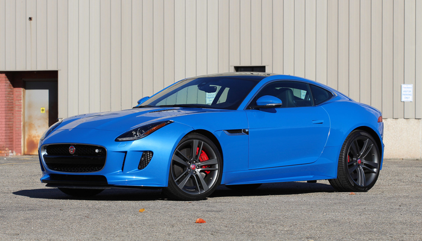

Новинки
Наконец-то публика увидела долгожданный итальянский спортивный кроссовер от Lamborghini под названием Urus 2018-2019. Это эксклюзивный автомобиль, который будет выпускаться ограниченным тиражом в 3500 экземпляров каждый год. Соответственно увидеть его на дорогах будет крайне сложно. 5 лет компания молчала и ничего не говорила о своей будущей новинке после представления концепта. В 2012-м году концепт представили в Пекине, из-за положительного отклика публики производитель решил начать заниматься серийной моделью.
Мощный силуэт и красивые пропорции F‑TYPE подтверждают его принадлежность к породе мощных спортивных автомобилей Jaguar новейшего поколения. Кажется, сам ветер создал его форму, и добиться этого помогли разработанные Jaguar новейшие методики аэродинамического компьютерного моделирования. Аэродинамические характеристики кузова уменьшают подъемную силу и обеспечивают великолепную устойчивость на высоких скоростях. Какой бы ни была скорость движения, адаптивные светодиодные фары F‑TYPE автоматически корректируют направление светового потока, гарантируя наилучшую освещенность дороги.